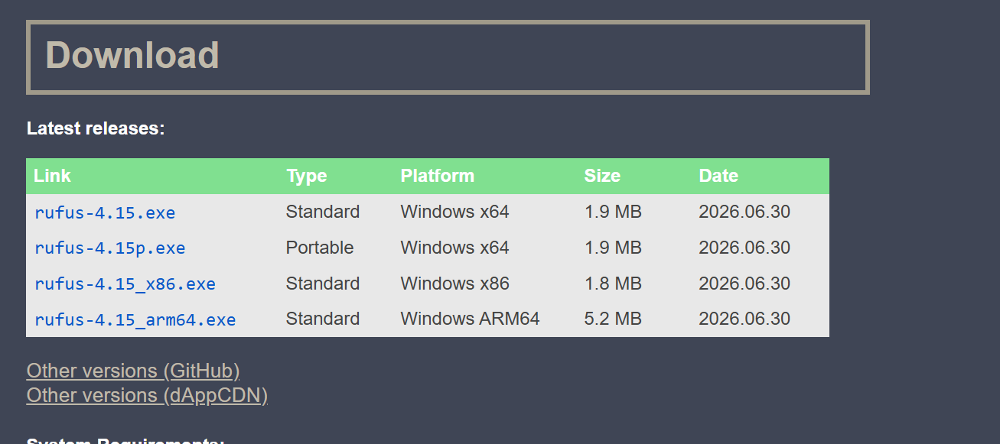
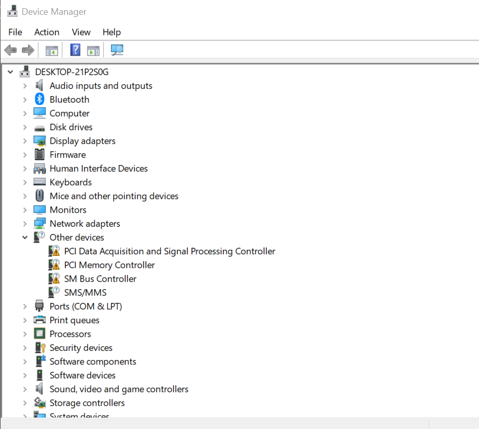

Instalación de Sistemas Operativos y posibles errores...
Requisitos para la Instalación:
- Un dispositivo extra para realizar la preparación del sistema operativo
- Una unidad USB (dependiendo de que sistema operativo necesites, hará falta una con más capacidad o menos)
- Internet(para descargar uno de los programas que se necesitan
- Paciencia y tiempo
Pasos para Instalar sistemas operativos:
Para la instalación de un sistema operativo, se utiliza un metodo llamado booteo o flasheo para realizar dicha instalación, esto
carga en memoria (en este caso la usb) para contener la iso preparada para una instalación de windows u otro sistema operativo de sus preferencia.
Primeramente, necesitamos descargar un programa que realizará esta preparación de usb, el más común es Rufus
Enlace de instalación de Rufus desde la página oficial: https://rufus.ie/en/

Además utilizando el internet, debemos descargar una iso, un archivo que contiene el sistema operativo que queremos instalar, se puede conseguir la iso oficial de windows 10, en mi caso utilizaré un sistema operativo optimizado de windows 7.
1- Preparar una unidad de USB
Ya teniendo el programa descargado, lo localizamos en nuestra carpeta de descargas
y lo siguiente sería abrir el programa y seguir los pasos que se ven a continuación:
2- Instalación
Retiramos el USB de la pc y acceder a la bios de la pc que queremos instalar el sistema operativo, lo insertamos ya sea en otro computador que queramos
instalarle el sistema operativo, o si se desea en el mismo dispositivo donde se realizó el paso uno, por si quiere cambiar de sistema operativo.
Ya al conectarlo debemos tener apagada pc cn el usb conectado nos adentraremos al boot menu. El boot menu es un apartado que nos permite elegir que
dispositvo arrancará la pc al iniciarla, ya sea nuestro disco habitual o la unidad que ya hemos preparado para que sea una unidad de arranque.
Para acceder a este menu, se deben presionar alguna de las teclas F12, F11 o F10 repetidas veces hasta que se acceda a este menu
3- Continuar la instalación
Sigue los pasos que se muestran a continuación y espere a que el sistema se instale tranquilamente.
En este paso, se elige todos los parámetros como la distribución del teclado, el idioma del sistema y luego se escoge el disco que en el
que se desea instalar el sistema operativo. Si es un disco vacío no hay ningun problema. Si deseaís eliminar el sistema
operativo que tiene instalado el disco, le dan a formatear en la selección de disco (esto eliminará todos los archivos
que contenga su pc, así que utilicen sistemas como drive, otras unidades de almacenamiento, o simplemente no borre todos los archivos
del disco, ya que si no lo formatea le pedirá solo instalar el SO) y ya luego instalan el sistema.
Si llegase a perder un archivo, sistemas como Recuva funcionan como recuperador de archivos y además es gratuito :
https://recuva.uptodown.com/windows
Post Instalación
Para este paso dependiendo de si se han instalado los drivers de red o no (comunmente ya vienen instalados) lo suyo sería instalar los
controladores o Drivers para evitar inconvenientes con el equipo.
Este sistema operativo trae una carpeta con unos instaladores de drivers, pero dado caso que tu sistema windows sea uno distinto al instalado
en los pasos del vídeo, los siguientes enlaces llevan a herramientas de instalación de drivers:
- Drivers más importantes: https://www.3dpchip.com/3dp/chip_down_lite.php?pl=es_es
- Drivers generales https://www.driveridentifier.com/
- Drivers de red (si no tienes los drivers de red, descargalo con otro dispositivo) https://www.3dpchip.com/3dpchip/3dp/net_down_es.php
Para que funciona esto?
Si tenemos algún problema de que no quieren servir las funcionalidades esenciales al haber instalado recientemente el sistema operativo falla de conexion a red, mal rendimiento, problema de comptabilidad con los dispositivos, entre otros problemas que pueden surgir, siempre la primera opción es revisar que los drivers esten instalados correctamente, al utilizar estos programas estamos instalado el software que permite comunicar el sistema operativo con los distintos componentes de nuestro dispositivo.Solución para evitar problemas en dispositivos conectados
En el caso que querramos identificar que este en orden todos los controladores y los dispositivos en buena disposición, es muy importante revisar el apartado de Administrador de dispositivos, este se accede presionando en el caso de windows 10 la tecla Windows + x
Si no podemos usar las combinaciones Windows + R para abrir el menu ejecutar donde tipeamos (escribimos) devmgmt.msc
Se abre este menu

y le damos aquí, para que se recarguen todos los dispositivos que se auto instalan al ser conectados (plug n´play)

Esta guia nos puede ser para cuando necesitemos resolver un problema con nuestra pc, reinstalando el sistema operativo, en dado caso si su PC fuese mal o necesite un pc limpio no dude en utilizar los metodos anteriores para realizar todos estos cambios.